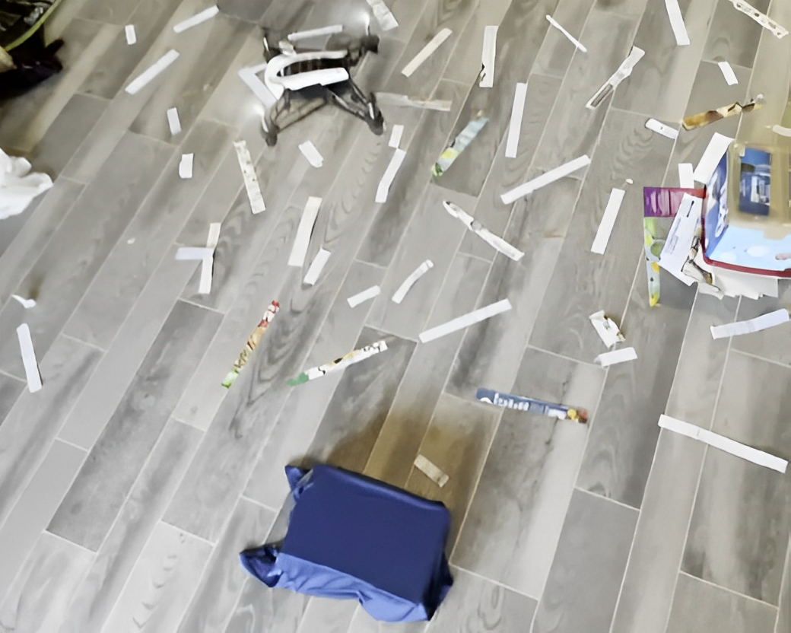

Drone Projects
January 2023 - April 2023
Arizona State University, Tempe, Arizona
Parrot Mambo Drone Waypoint Follower Project with MATLAB
.png)
In this project, I leveraged MATLAB's advanced capabilities in robotics and control systems to create a precise and autonomous navigation system for the Parrot Mambo Drone. By utilizing MATLAB's control algorithms, I enabled the drone to follow a predefined flight path defined by a sequence of waypoints. This project showcased my expertise in robotics and programming while demonstrating the practical applications of MATLAB in drone automation and control.
Click the Youtube logo for this project video.
Parrot Mambo Drone Orbit Follower Project with MATLAB
.png)
With the assistance of MATLAB, I successfully completed the Parrot Mambo Drone Orbit Follower project. This project involved programming the drone to autonomously orbit around a specified target or point of interest. By harnessing MATLAB's computational capabilities and control algorithms, I created an efficient and accurate system for orchestrating the drone's circular flight path around the designated target. This project highlighted my proficiency in robotics and programming and demonstrated the versatility of MATLAB in enabling precise and automated drone maneuvers for various applications.
Click the Youtube logo for this project video.
Parrot Minidrone Blue Square Object Detection with MATLAB
In this project, I operated a Parrot Minidrone and employed MATLAB to detect a blue square object. This project showcased my skills in drone piloting and computer vision techniques. Using MATLAB's image processing capabilities, I implemented an efficient algorithm for recognizing and tracking the blue square object. This project highlighted the practical applications of MATLAB in drone-based object detection and tracking tasks.
Click the Youtube logo for this project video.
Parrot Mambo Drone Line Following Algorithm with MATLAB
.png)
I successfully developed a Parrot Mambo Drone Line Following Algorithm using MATLAB. This algorithm incorporated Bresenham's Line Algorithm and a brute-force circle detection technique, enabling the drone to autonomously follow intricate paths and detect circular patterns with high precision. By merging these advanced algorithms with MATLAB's computational capabilities, I created an efficient and accurate navigation system for the drone. This project not only showcased my expertise in robotics and programming but also demonstrated MATLAB's versatility in enabling complex, real-time drone operations for applications such as line following and circle detection.
Click the Youtube logo for this project video.
Check out the project here GitHub for references.